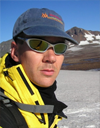

| About the Polar RS Team |
The
case studies in this resource have been developed with input from
several people who are mentioned within the respective case studies.
The core team developing this resource includes:
Dr. Anupma Prakash
is an Associate Professor in remote sensing geophysics carrying out
research on Arctic processes at the Geophysical Institute, University
of Alaska Fairbanks (UAF). She teaches post-secondary courses in remote
sensing and GIS at the Department of Geology and Geophysics, UAF. She
is also funded by the NASA ESSE21 Program, NSF GeoEd Program, Alaska
Space Grant Program, and State industries. Dr Prakash is involved in
conducting teacher training, K12 and post-secondary curriculum
development, and making science data and research results accessible to
all audiences. More information on her research and teaching is
available at https://anupma-prakash.github.io/.
Dr. Rudiger Gens is a Remote
Sensing Scientist at the Alaska Satellite Facility at UAF. His research
specialization is in the processing and applications of Interferometric
Synthetic Aperture Radar data. Dr. Gens is also a cooperating faculty
at the Department of Geology and Geophysics at UAF, where he teaches
courses in the principles and applications of SAR and InSAR that are
open to participants from all over the nation. Dr. Gens is the
coordinator for the ASF seminar series and involved with ASF outreach
activities, including but not limited to SAR user support, teacher
training and reaching out to K-16 audience. More information on his
research and teaching is available at https://rudigens.github.io/.
Steve C McClung is
a geosciences education/outreach media specialist. Steve is a graduate
of the Geosciences Department at Oregon State University, where his
research focused on the use of remote sensing and GIS for the
delineation of lahar (volcanic debris flow) hazard zones for Mount
Shasta, California. His experience in geohazards modeling, html
programming, and scientific visualization have helped to bring Earth
Science research to the classroom via the Internet.